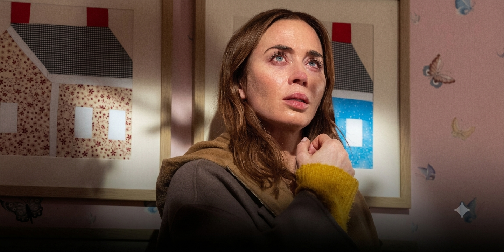
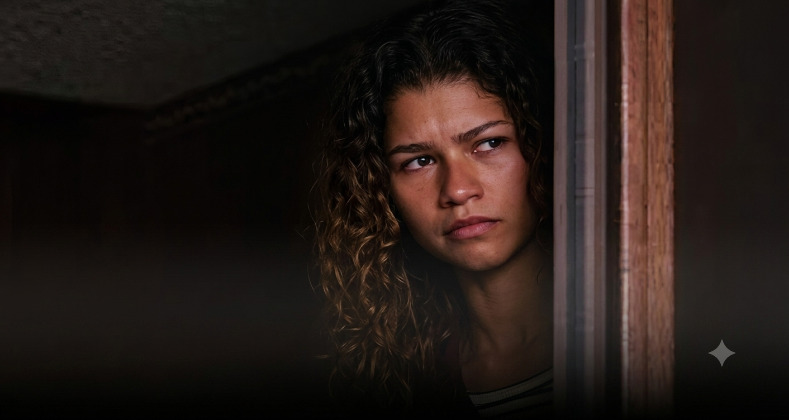

ENTREVISTAS

Lo mejor de Spielberg en este siglo? Que dice la critica sobre “El dia de la Revelación”
¿A qué hora se estrena el episodio final de la tercer temporada de Euphoria? Un varón: la película colombiana que tuvo su estreno mundial en el FICPBA
Un varón: la película colombiana que tuvo su estreno mundial en el FICPBA
 Entrevista a Fede Álvarez por el estreno de Alien: Romulus
Entrevista a Fede Álvarez por el estreno de Alien: Romulus